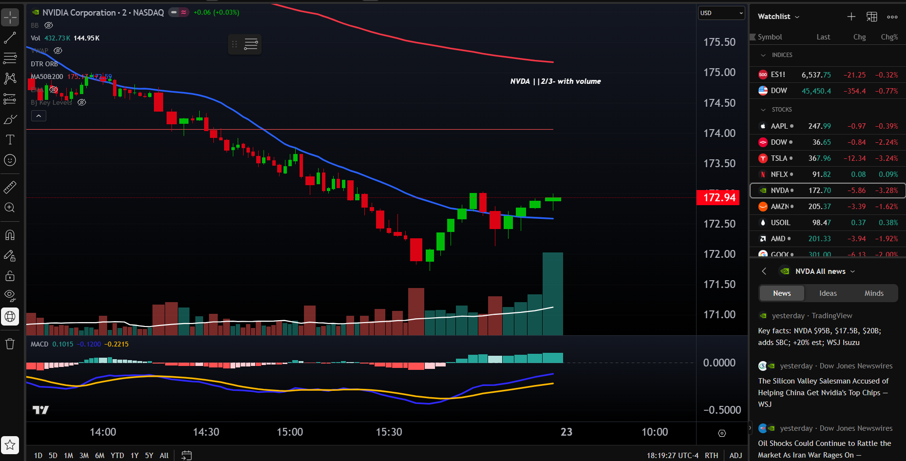

Objective
Given an informative image in webpage context, you will apply a 5-step procedure to write alt text that communicates the image’s essential meaning.
Condition: given an image and its surrounding context
Performance: apply the procedure to write or choose effective alt text
Criteria: score at least 4 out of 5 correctly
Scope of This Module
This module focuses only on informative images.
Informative images add meaning that helps the user understand the page. If the image were removed, some useful information would be lost.
The 5-Step Procedure
- Look at the image.
- Identify what information the image adds.
- Check what the surrounding text already explains.
- Write alt text that captures the essential meaning.
- Remove extra details and redundant wording.
Demonstration 1: Easier Example
Bad vs Good Alt Text
Why it is weak:
- Focuses on appearance instead of purpose
- Includes extra details that do not help the user
- Misses the main meaning of the image
Apply the procedure:
- Look at the image.
- The image adds the idea of someone presenting information to a group.
- The surrounding text already provides general meeting context.
- Write the essential meaning.
- Remove extra details about smiling, clothing, and furniture.
Demonstration 2: Harder Example

Bad vs Good Alt Text
Why it is weak:
- Too vague to communicate the main message
- Lists chart parts instead of summarizing meaning
- Does not tell the user what trend matters most
Apply the procedure:
- Look at the image.
- The chart adds information about enrollment growth over time.
- The surrounding article already explains the general topic, so the alt text should summarize the main trend.
- Write the essential meaning.
- Remove unnecessary mentions of layout, colors, and every label.
In this module, I begin by looking at the image and its surrounding context.
Next, I identify what information the image adds that helps the user understand the page.
Then I check what the surrounding text already explains so I do not repeat unnecessary details.
After that, I write alt text that captures the essential meaning of the image.
Finally, I remove extra details and keep only what is useful for understanding the image’s purpose.
Activity 1: Put the Steps in Order
Place the five procedure steps in the correct order.
Activity 2: Basic Informative Example

Context: This image appears in an article about a doctor reviewing results with a patient during a consultation.
Activity 3: NVIDIA Revenue Chart
Context: This chart appears in a report about NVIDIA’s revenue growth across different business segments.
Activity 4: NVIDIA Trading Chart

Context: This chart appears in a page showing NVIDIA stock price movement over time, along with trading indicators.
Activity 5: Tricky Context Example

Context: This image appears in an article titled “Wall Street Reacts to Market Volatility”. The nearby text already mentions that traders are responding to market changes.
Results
Your score: 0 / 5